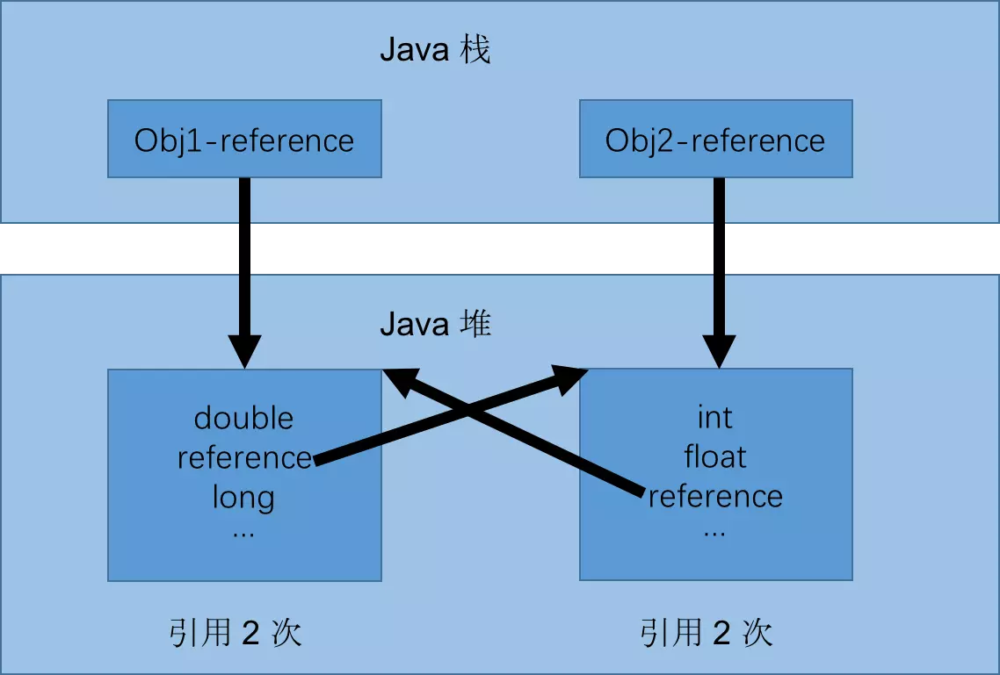

概述
垃圾收集 Garbage Collection 通常被称为“GC”，它诞生于1960年 MIT 的 Lisp 语言，经过半个多世纪，目前已经十分成熟了。 jvm 中，程序计数器、虚拟机栈、本地方法栈都是随线程而生随线程而灭，栈帧随着方法的进入和退出做入栈和出栈操作，实现了自动的内存清理，因此，我们的内存垃圾回收主要集中于 java 堆和方法区中，在程序运行期间，这部分内存的分配和使用都是动态的。
对象已死吗？
在进行内存回收之前要做的事情就是判断哪些对象是“死”的，哪些对象是“活”的。
引用计数法
给对象添加一个引用计数器。但是难以解决循环引用问题。

从图中可以看出，如果不下小心直接把 Obj1-reference 和 Obj2-reference 置 null。则在 Java 堆当中的两块内存依然保持着互相引用无法回收。
可达性分析法
通过一系列的 ‘GC Roots’ 的对象作为起始点，从这些节点出发所走过的路径称为引用链。当一个对象到 GC Roots 没有任何引用链相连的时候说明对象不可用。
可作为 GC Roots 的对象：
- 虚拟机栈(栈帧中的本地变量表)中引用的对象
- 方法区中类静态属性引用的对象
- 方法区中常量引用的对象
- 本地方法栈中 JNI(即一般说的 Native 方法) 引用的对象
再谈引用
前面的两种方式判断存活时都与“引用”有关。但是 JDK 1.2 之后，引用概念进行了扩充，下面具体介绍。
强引用
类似于 Object obj = new Object(); 创建的，只要强引用在就不回收。
软引用
SoftReference 类实现软引用。在系统要发生内存溢出异常之前，将会把这些对象列进回收范围之中进行二次回收。
弱引用
WeakReference 类实现弱引用。对象只能生存到下一次垃圾收集之前。在垃圾收集器工作时，无论内存是否足够都会回收掉只被弱引用关联的对象。
虚引用
PhantomReference 类实现虚引用。无法通过虚引用获取一个对象的实例，为一个对象设置虚引用关联的唯一目的就是能在这个对象被收集器回收时收到一个系统通知。
生存还是死亡
即使在可达性分析算法中不可达的对象，也并非是“facebook”的，这时候它们暂时出于“缓刑”阶段，一个对象的真正死亡至少要经历两次标记过程：如果对象在进行中可达性分析后发现没有与 GC Roots 相连接的引用链，那他将会被第一次标记并且进行一次筛选，筛选条件是此对象是否有必要执行 finalize() 方法。当对象没有覆盖 finalize() 方法，或者 finalize() 方法已经被虚拟机调用过，虚拟机将这两种情况都视为“没有必要执行”。
如果这个对象被判定为有必要执行 finalize() 方法，那么这个对象竟会放置在一个叫做 F-Queue 的队列中，并在稍后由一个由虚拟机自动建立的、低优先级的 Finalizer 线程去执行它。这里所谓的“执行”是指虚拟机会出发这个方法，并不承诺或等待他运行结束。finalize() 方法是对象逃脱死亡命运的最后一次机会，稍后 GC 将对 F-Queue 中的对象进行第二次小规模的标记，如果对象要在 finalize() 中成功拯救自己 —— 只要重新与引用链上的任何一个对象简历关联即可。
finalize() 方法只会被系统自动调用一次。
回收方法区
在堆中，尤其是在新生代中，一次垃圾回收一般可以回收 70% ~ 95% 的空间，而永久代的垃圾收集效率远低于此。
永久代垃圾回收主要两部分内容：废弃的常量和无用的类。
判断废弃常量：一般是判断没有该常量的引用。
判断无用的类：要以下三个条件都满足
- 该类所有的实例都已经回收，也就是 Java 堆中不存在该类的任何实例。
- 加载该类的 ClassLoader 已经被回收。
- 该类对应的 java.lang.Class 对象没有任何地方呗引用，无法在任何地方通过反射访问该类的方法。
垃圾回收算法
标记 -清除算法
“标记-清除”（Mark-Sweep）算法，如它的名字一样，算法分为“标记”和“清除”两个阶段：首先标记出所有需要回收的对象，在标记完成后统一回收掉所有被标记的对象。之所以说它是最基础的收集算法，是因为后续的收集算法都是基于这种思路并对其缺点进行改进而得到的。
它的主要缺点有两个：一个是效率问题，标记和清除过程的效率都不高；另外一个是空间问题，标记清除之后会产生大量不连续的内存碎片，空间碎片太多可能会导致，当程序在以后的运行过程中需要分配较大对象时无法找到足够的连续内存而不得不提前触发另一次垃圾收集动作。
复制算法
“复制”（Copying）的收集算法，它将可用内存按容量划分为大小相等的两块，每次只使用其中的一块。当这一块的内存用完了，就将还存活着的对象复制到另外一块上面，然后再把已使用过的内存空间一次清理掉。
这样使得每次都是对其中的一块进行内存回收，内存分配时也就不用考虑内存碎片等复杂情况，只要移动堆顶指针，按顺序分配内存即可，实现简单，运行高效。只是这种算法的代价是将内存缩小为原来的一半，持续复制长生存期的对象则导致效率降低。
标记-压缩算法
复制收集算法在对象存活率较高时就要执行较多的复制操作，效率将会变低。更关键的是，如果不想浪费50%的空间，就需要有额外的空间进行分配担保，以应对被使用的内存中所有对象都100%存活的极端情况，所以在老年代一般不能直接选用这种算法。
根据老年代的特点，有人提出了另外一种“标记-整理”（Mark-Compact）算法，标记过程仍然与“标记-清除”算法一样，但后续步骤不是直接对可回收对象进行清理，而是让所有存活的对象都向一端移动，然后直接清理掉端边界以外的内存。
分代收集算法
GC分代的基本假设：绝大部分对象的生命周期都非常短暂，存活时间短。
“分代收集”（Generational Collection）算法，把Java堆分为新生代和老年代，这样就可以根据各个年代的特点采用最适当的收集算法。在新生代中，每次垃圾收集时都发现有大批对象死去，只有少量存活，那就选用复制算法，只需要付出少量存活对象的复制成本就可以完成收集。而老年代中因为对象存活率高、没有额外空间对它进行分配担保，就必须使用“标记-清理”或“标记-整理”算法来进行回收。
垃圾回收器
收集算法是内存回收的理论，而垃圾回收器是内存回收的实践。
Serial 收集器
这是一个单线程收集器。意味着它只会使用一个 CPU 或一条收集线程去完成收集工作，并且在进行垃圾回收时必须暂停其它所有的工作线程直到收集结束。

ParNew 收集器
可以认为是 Serial 收集器的多线程版本。
并行：Parallel
指多条垃圾收集线程并行工作，此时用户线程处于等待状态
并发：Concurrent
指用户线程和垃圾回收线程同时执行(不一定是并行，有可能是交叉执行)，用户进程在运行，而垃圾回收线程在另一个 CPU 上运行。
Parallel Scavenge 收集器
这是一个新生代收集器，也是使用复制算法实现，同时也是并行的多线程收集器。
CMS 等收集器的关注点是尽可能地缩短垃圾收集时用户线程所停顿的时间，而 Parallel Scavenge 收集器的目的是达到一个可控制的吞吐量(Throughput = 运行用户代码时间 / (运行用户代码时间 + 垃圾收集时间))。
作为一个吞吐量优先的收集器，虚拟机会根据当前系统的运行情况收集性能监控信息，动态调整停顿时间。这就是 GC 的自适应调整策略(GC Ergonomics)。
Serial Old 收集器
收集器的老年代版本，单线程，使用 标记 —— 整理。
Parallel Old 收集器
Parallel Old 是 Parallel Scavenge 收集器的老年代版本。多线程，使用 标记 —— 整理
CMS 收集器
CMS (Concurrent Mark Sweep) 收集器是一种以获取最短回收停顿时间为目标的收集器。基于 标记 —— 清除 算法实现。
运作步骤:
- 初始标记(CMS initial mark)：标记 GC Roots 能直接关联到的对象。
- 并发标记(CMS concurrent mark)：进行 GC Roots Tracing。
- 重新标记(CMS remark)：修正并发标记期间的变动部分。
- 并发清除(CMS concurrent sweep)。
缺点：对 CPU 资源敏感、无法收集浮动垃圾、标记 —— 清除 算法带来的空间碎片
G1 收集器
面向服务端的垃圾回收器。
优点：并行与并发、分代收集、空间整合、可预测停顿。
运作步骤:
- 初始标记(Initial Marking)。
- 并发标记(Concurrent Marking)。
- 最终标记(Final Marking)。
- 筛选回收(Live Data Counting and Evacuation)。
内存分配与回收策略
一般来说 Java 堆的内存模型如下图所示：
新生代 GC (Minor GC)
发生在新生代的垃圾回收动作，频繁，速度快。
老年代 GC (Major GC / Full GC)
发生在老年代的垃圾回收动作，出现了 Major GC 经常会伴随至少一次 Minor GC(非绝对)。Major GC 的速度一般会比 Minor GC 慢十倍以上。
对象优先在 Eden 分配
对象主要分配在新生代的 Eden 区上，如果启动了本地线程分配缓冲区，将线程优先在 (TLAB) 上分配。少数情况会直接分配在老年代中。
大对象直接进入老年代
大对象是指需要大量连续内存空间的对象，虚拟机提供了参数 -XX:PretenureSizeThreshold（只对Serial，PerNew两个回收器起效），令大于这个值得对象直接在老年代分配，避免了 Eden 和 两个 Survival 之间发生大量的内存复制。
长期存活的对象将进入老年代
虚拟机给每个对象定义了对象年龄计数器（Age），如果对象在Eden出生，经过第一次 Minor GC 后依然存活，并且能被 Survival 容纳的话，将被移动到 Survival ，对象年龄设为 1。对象在 Survival 中每熬过一次 Major GC，年龄就增加 1，达到一定程度（默认是 15 ），就会被晋升到老年代。对象晋升老年代的阈值，可以通过参数 -XX:MaxTenuringThreShold 指定。
动态对象年龄判定
如果在 Survival 空间中相同年龄所有对象的大小综合超过了 Survival 空间的一半，年龄大于等于这个年龄的对象都会被晋升到老年代。无需等待年龄超过 MaxTenuringThreShold 指定的年龄。
空间分配担保
只要老年代的连续空间大于新生代对象总和或者历次晋升的平均大小，就进行 Major GC，否则进行 Full GC。